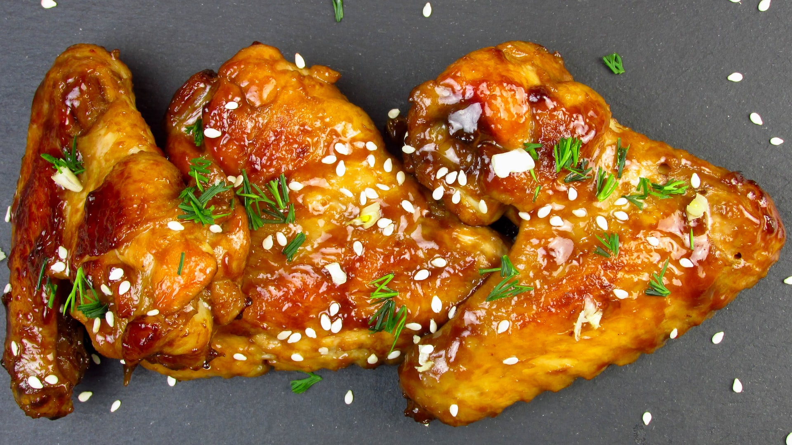

Cola Chicken

Description
Cola Chicken is a chicken dish popular in Asia,
prepared with chicken and cola soft drink as main ingredients.
The cola is typically mixed with another ingredient, such as soy sauce, barbecue sauce or ketchup.
It can be prepared with regular or diet cola.
Ingredients
- 4 skinless, boneless chicken breast halves
- salt and pepper to taste
- 2 tablespoons Worcestershire sauce
- 1 cup ketchup
- 1 cup cola-flavored carbonated beverage
Steps
-
Preheat the oven to 350 degrees F (175 degrees C).
-
Place the chicken pieces into a 9x13 inch baking dish.
Season with salt and pepper.
In a medium bowl, mix together the Worcestershire sauce,
ketchup and cola. Pour over the chicken.
Cover with a lid or aluminum foil.
-
Bake for 50 minutes in the preheated oven,
until the chicken is no longer pink.
Back to main page